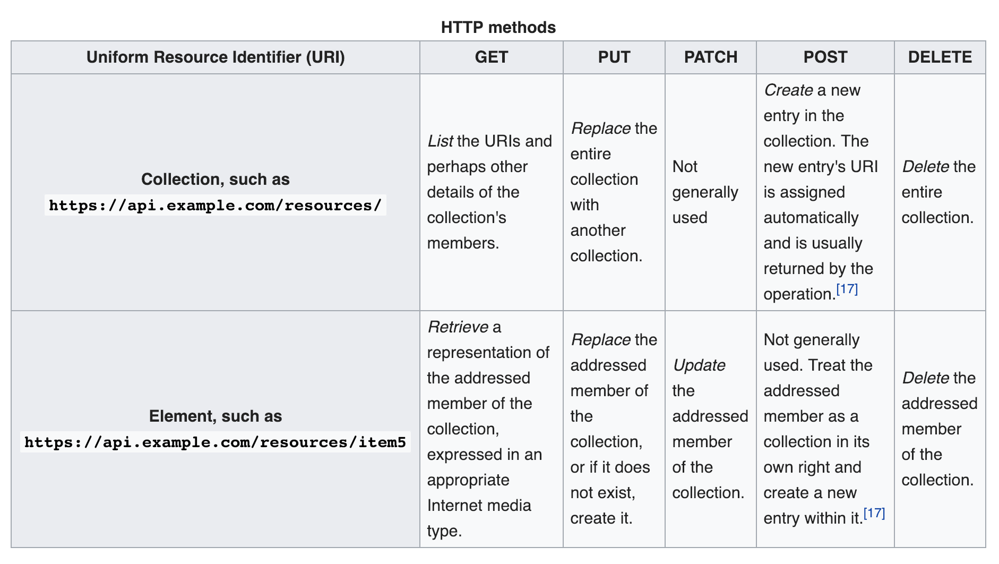

lab 4 REST
Goals
- To understand what a RESTful API is
- To build one
What does REST stand for?
What’s the point of a RESTful API?
- Expects statelessness. No client context is stored in between requests. This means
that the client has to give all the information about themselves, which the server
can then use to service the request. (Ex. Giving the server the login details)
- Cacheability. Storing previous information loaded for quick acccess
Example
There are 5 methods normally used. GET, POST, DELETE, PUT, PATCH. So far we have only used GET requests, and we will mostly focus on GET and POST requests.
- “GET” requests are used to retrieve information for the server. The client will go to the browser like “https://localhost:5000/latest_tweets” and will fetch the latest tweets at that route.
- “POST” requests are used to add information to the server. The client will go to the browser like “https://localhost:5000/latest_tweets” but instead of making a “GET” request we’ll make a “POST” request. Flask will then handle each request differently. If a “POST” request is given, we will expect a request body with information from the client. In this case, it will be a tweet written by the client. We will send that up to the server, who will then save it.

Things to keep in mind
- Two requests can go to the same route by doing either a “POST” or “GET” request
Coding Exercises
1. Look up how to explicitly specify a “GET” method on flask and do so